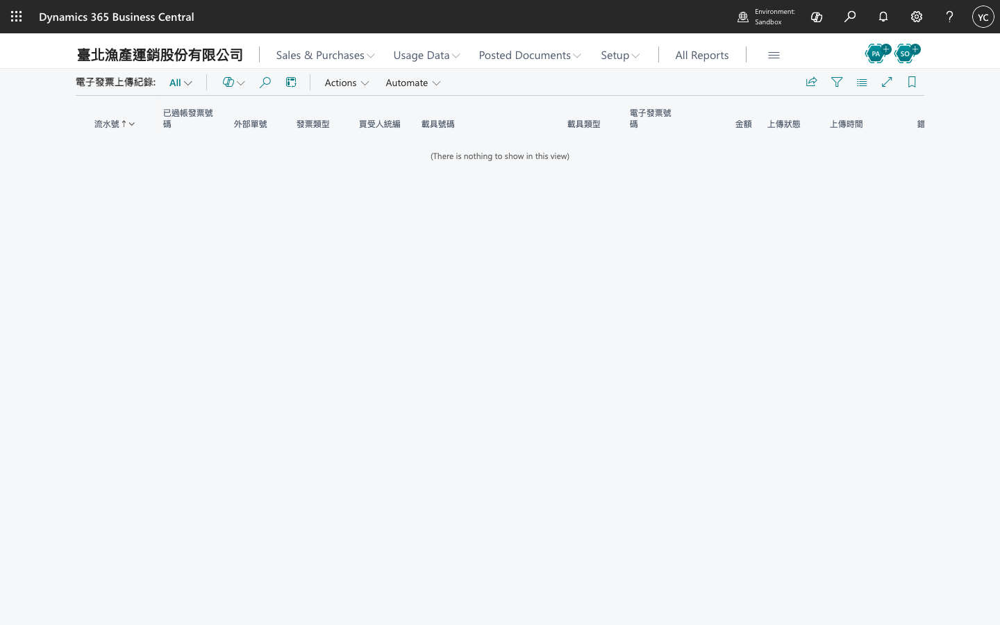
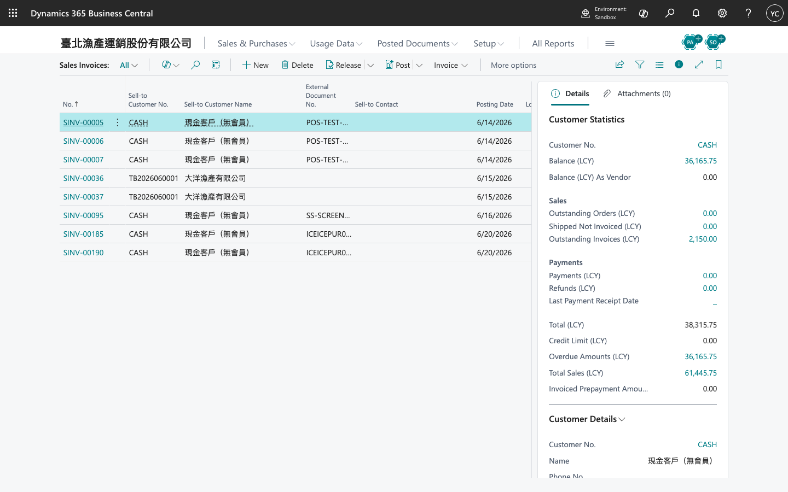

電子發票操作手冊
一、常用頁面
| 功能 | 搜尋關鍵字 |
|---|---|
| 電子發票設定 | 電子發票設定 / TW E-Invoice Setup |
| 上傳紀錄 | 電子發票上傳紀錄 / TW E-Invoice Log |
| 銷售發票 | Sales Invoices（標準 BC） |
| 已過帳銷售發票 | Posted Sales Invoices |
二、日常流程概覽
建立銷售發票 → 填寫客戶與品項 → 過帳
→ 自動建立 E-Invoice Log（狀態 Pending）
→ 若已啟用 ISV：HTTP 上傳 → Uploaded（含發票號碼等）
→ 否則維持 Pending，待手動或後續整合處理
三、開立與過帳銷售發票
- 依標準 BC 流程建立銷售發票。
- 確認客戶、統編、品項與金額；B2B／B2C 相關欄位依貴司規則填寫（含 Your Reference 等，若已設定）。
- 過帳發票。
- 延伸模組於背景建立電子發票上傳紀錄一筆。
四、查看上傳紀錄
- 搜尋 電子發票上傳紀錄。
- 依過帳日期、狀態（Pending / Uploaded / Error 等）篩選。
- 點選單筆查看關聯過帳發票、錯誤訊息、ISV 回傳之電子發票號碼（若有）。

五、啟用 ISV 上傳（Production）
- 於電子發票設定將 啟用 ISV 介接 設為開啟。
- 填入合作加值中心或自建閘道之 HTTPS Endpoint URL 與 API Key（若需要）。
- （選用）開啟過帳後自動排程上傳。
- 測試過帳一張發票，確認 Log 狀態由 Pending 變為 Uploaded；失敗時檢查 Endpoint 與憑證。

重要：本延伸模組提供 BC 內管線與 ISV 呼叫介面；與財政部／加值中心之正式連線須由 ISV 服務方提供並符合當時法規。
六、僅使用 BC 內 Log（未接 ISV）
可將 ISV Integration 維持關閉，先驗證發票過帳與 Log 建立；待 ISV 就緒後再啟用上傳。適合 Sandbox 或分階段上線。
七、建置檢查
- 公司統編、字軌前綴已設定
- TW E-Invoice Admin 已指派給會計／資訊人員
- 測試過帳後 Log 有資料
- （若啟用 ISV）Endpoint 可連線且 Log 狀態正常